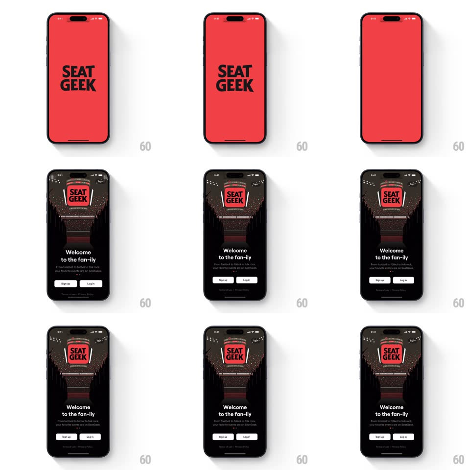

Media
Frame-by-frame

Rebuild this interaction 1:1: SeatGeek's splash-to-onboarding transition - the solid red SEATGEEK wordmark screen shrinks and rotates into a stadium jumbotron screen hanging over a dark arena crowd, revealing "Welcome to the fan-ily" with Sign up / Log in buttons.

Rebuild this interaction 1:1: SeatGeek's splash-to-onboarding transition - the solid red SEATGEEK wordmark screen shrinks and rotates into a stadium jumbotron screen hanging over a dark arena crowd, revealing "Welcome to the fan-ily" with Sign up / Log in buttons. ## Integration Integration: stack-agnostic spec - springs given as stiffness/damping, timed motions as duration + curve; map every value to your framework and animation library of choice. ## Scene Frame 1: full-bleed red screen, black SEATGEEK wordmark centered. Frame 2: a dark stadium photo - light rigs at top, crowd glittering below - with the red screen now living as the jumbotron display hanging mid-frame; headline, subcopy, and two pill buttons (Sign up white, Log in outlined) below. ## Motion spec Pattern: full-screen brand card shrinking into an in-world scoreboard. - Hold the red card 600ms. Then it shrinks toward its jumbotron slot (scale 1 -> ~0.42, 700ms, ease-in-out) with a slight perspective tilt (rotateX 6deg settling to 0) - the card becomes an object in a world. - As the card shrinks, the stadium fades in around it (500ms, starting at 30% shrink), crowd lights twinkling on with a randomized 800ms sparkle stagger. - The wordmark stays pinned to the card throughout - one surface, continuous. - Headline and subcopy fade + rise 16px (300ms) once the card lands; buttons fade up 100ms later. - The jumbotron idles with a barely-there float (+-3px, 3s sine) - it's hanging, not glued. ## Calibration - The shrink lands softly (ease-out tail) - no bounce; the arena reveal is the payoff, not the spring. - Total sequence ~2.1s to interactive. ## Reduced motion Crossfade red card to stadium scene; wordmark scales without tilt. ## Don't miss - The reveal recontextualizes the splash: it was the scoreboard all along. - Crowd bokeh lights must twinkle - a static photo kills the illusion.